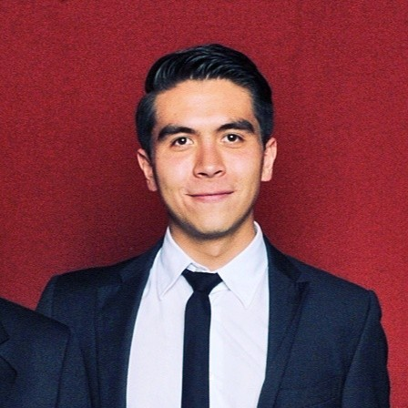

Will Huang
Product Owner, Developer
I'm a second-year MPP student at the Harvard Kennedy School.
Surabhi Hodigere
Scrum Master (Sprint 1), Developer
I am second year Master in Public Policy candidate at the Harvard Kennedy School of Government. I am also research assistant at the Ash Center for Democratic Governance and Innovation where I work on projects pertinent to digital era government.

Rodrigo Pérez-Tejada Fuentes
Scrum Master (Sprint 2), Developer
I am a second year MPP student at HKS. My background is in risk consulting with a focus on anticorruption investigations.
Serim Hande Tarcan
Developer, UX Design & Data Visualization
A medical doctor doing a master of public health (MPH) at Harvard Chan.